O mesmo time. Resultados completamente diferentes.
9 em cada 10 empresas já usam IA de alguma forma. Mas só algumas se tornaram organizações agênticas, com humanos e agentes em sincronia, crescendo em escala sem contratar na mesma proporção. A diferença não está na ferramenta. Está na ordem: primeiro o processo, depois as pessoas, e só então os agentes.
Conversamos e ajustamos o modelo para a Neogrid. Como a infraestrutura será de vocês, não vamos cobrar Master Fee. Em vez disso, vocês pagam por cada agente que colocamos em produção. O Master Fee só existe para custear a nossa infraestrutura de tokens, quando a IA roda do nosso lado, e esse não é o caso aqui.
Taxa fixa para custear a nossa infraestrutura de tokens, somada ao consumo de cada agente.
Sem Master Fee e sem margem sobre consumo. Vocês pagam por cada agente no ar e os tokens vão direto ao provedor, no custo.
A infraestrutura é da Neogrid. Vocês pagam por agente, no custo. Transparência total.
De saúde a logística, de previdência privada a software. Implementações ativas em clientes de 4 continentes.
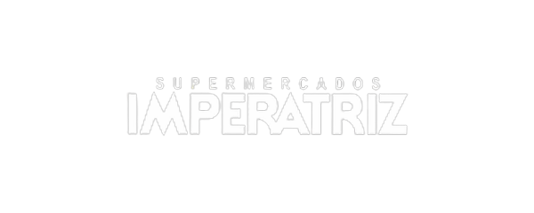
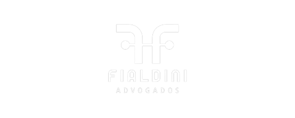
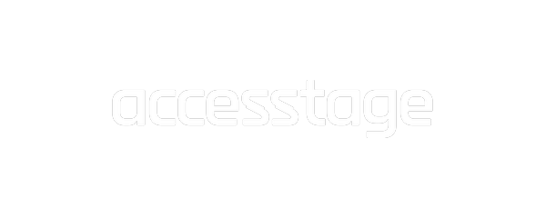
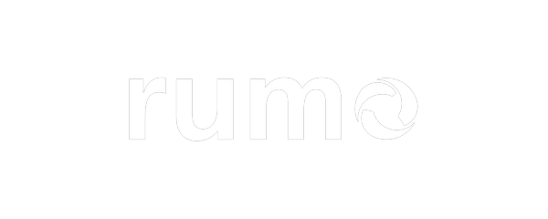
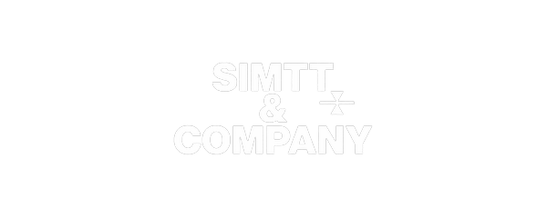
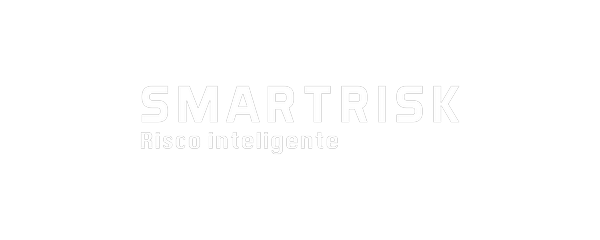
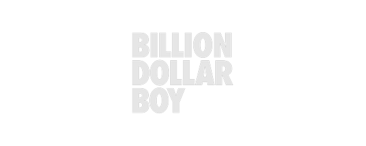
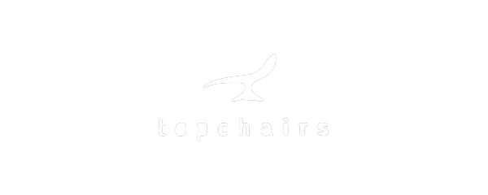
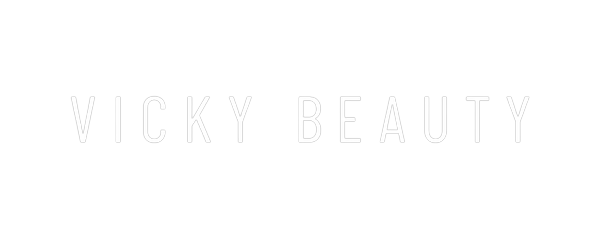
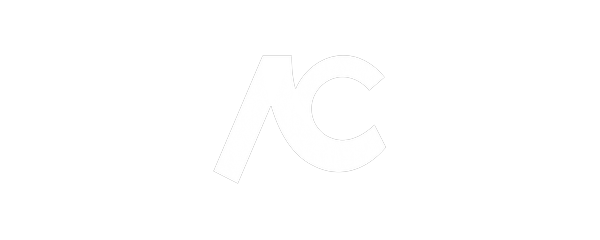
Cada empresa começa pela Imersão, que acontece uma única vez. Depois entra no Sprint, onde os agentes vão para produção. Quem quer continuar evoluindo pode nos manter operando a IA, e formar o próprio time. É uma progressão.
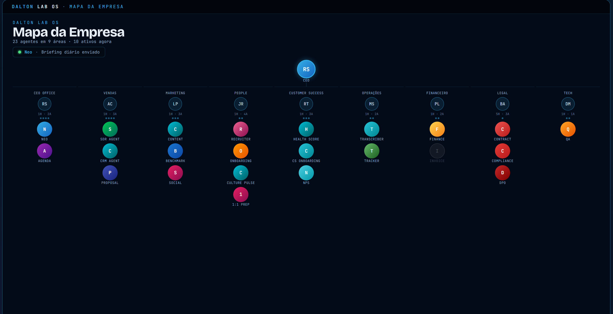
Uma implementação pode envolver vários agentes.
Do desenho à produção, com o seu time por perto em cada passo.
O acesso ao Dalton Lab OS e ao Compass faz parte da Operação Agêntica. Não está incluído no Sprint.
Uma camada extra e opcional, fora do pacote principal. O objetivo é a empresa passar a pensar com os agentes, além de operá-los.
Já estamos no final das três semanas de POC da primeira implementação, a etapa que antecede as dez semanas de construção. Para ganhar tempo, a Imersão roda em paralelo com essa primeira implementação, em vez de esperar uma terminar para a outra começar.
POC concluindo, Imersão e implementação em paralelo, primeiro agente no ar em ~10 semanas. Velocidade com método.
Valores desenhados para o porte da Neogrid. A operação só passa a ser cobrada quando o primeiro agente entra em produção.
Ex.: implementação de R$ 120k → operação de R$ 6k a 12k/mês a partir do go-live.
Nós garantimos o que controlamos: a clareza da Imersão e o KPI técnico do agente. O ROI financeiro depende dos seus dados e da sua operação, então fica de fora da promessa.
Se a Imersão não identificar pelo menos um business case com retorno viável, você escolhe: crédito integral no Sprint ou reembolso em até 30 dias.
Se em 90 dias após o go-live o agente não atingir o KPI técnico cravado em contrato, nós continuamos operando e ajustando, sem custo adicional, até atingir.
Você contrata um problema resolvido, com KPI definido em contrato.
Tudo o que os seus agentes fazem em um só lugar, auditável e em tempo real. Você vê, controla e evolui a operação sem depender de ninguém.
A leitura estratégica da operação: aponta onde há novas oportunidades de agente e mantém vivo o seu roadmap de expansão.
Trabalhar sobre o ganho é o modelo mais alinhado que existe. Mas ele só funciona sobre uma relação madura: dados abertos, confiança e uma linha de base medida em conjunto.
Entregamos as implementações e operamos com KPI cravado. Você vê o ganho acontecer, com número de antes e depois.
Com a base de confiança construída e os dados na mesa, avaliamos juntos um modelo de % sobre o ganho gerado. Risco e resultado dos dois lados.
Começamos provando. Depois, crescemos juntos.
A empresa que te ajuda a se tornar uma organização agêntica.